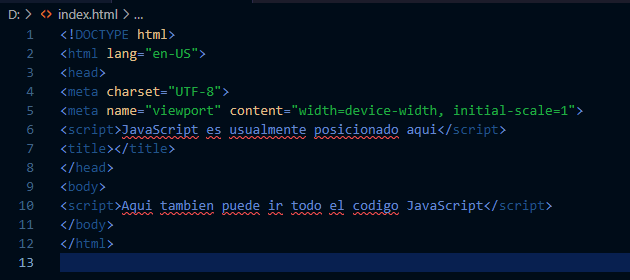
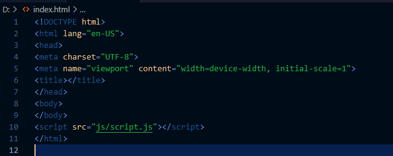

Morales Eluney 5to2da
Tecnica programadora
Morales Eluney 5to2da
Tecnica programadora
Hay dos formas de incluir JavaScript en HTML y hacer que ambos funcionen.
La primera forma es directa. Se puede usar la etiqueta "script" que debe tener todo el código JS que vayas escribiendo. El código JS se puede agregar entre las etiquetas “head” y “body”. (Dependiendo de dónde agregues el código JavaScript en tu archivo HTML, la carga cambia. Se recomienda agregarlo en “head” para que permanezca separado del contenido de tu archivo HTML).
Un ejemplo puede ser:
La segunda forma es importando archivos externos. Estos archivos se pueden agregar desde adentro de los documentos HTML. Esto nos permite que los códigos HTML y JavaScript están separados y sea mas prolijo, la legibilidad y el mantenimiento del código es mucho más sencilla, Los archivos JavaScript en caché mejoran el rendimiento general del sitio web al reducir el tiempo que tardan las páginas en cargarse.
Un ejemplo puede ser:
